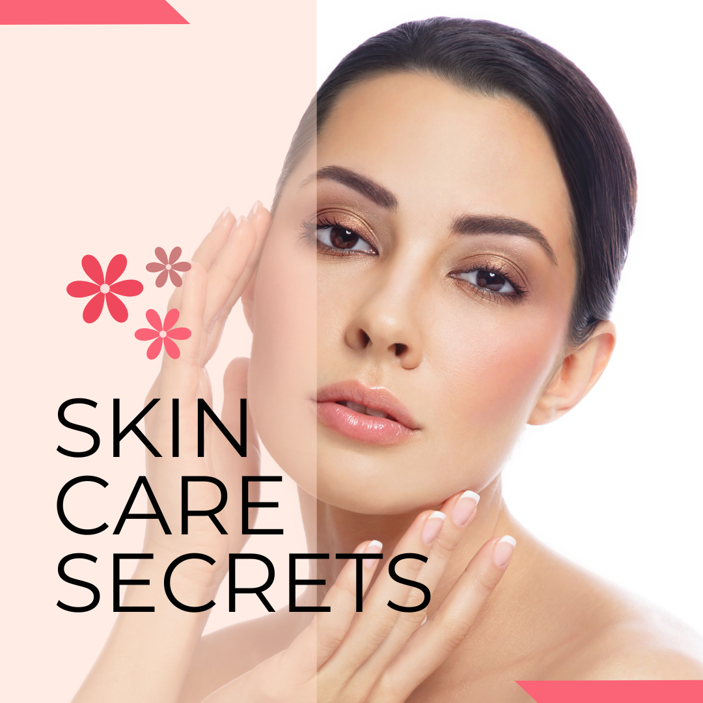
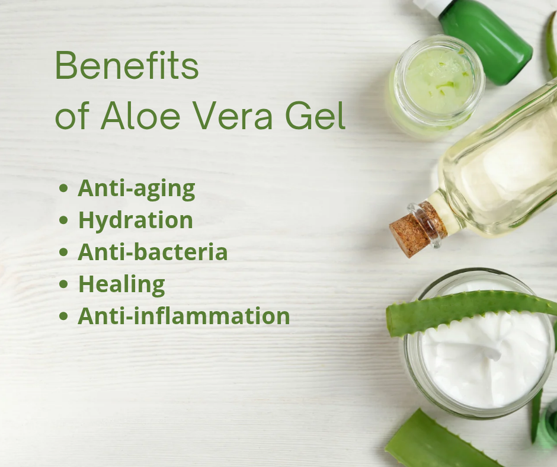
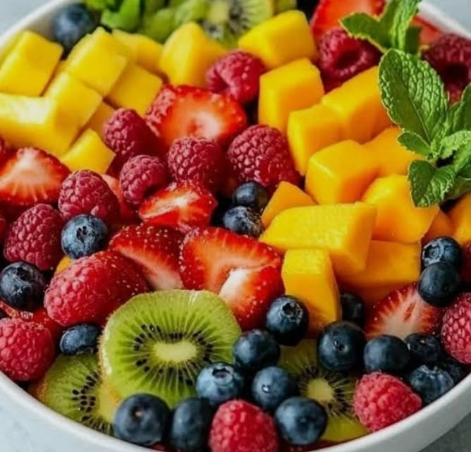
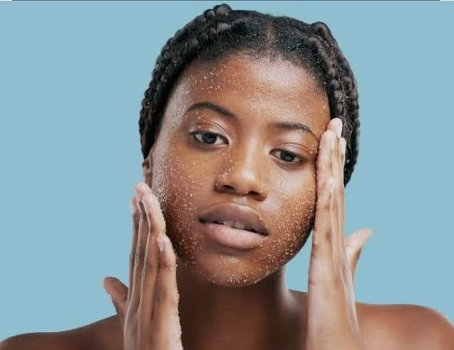
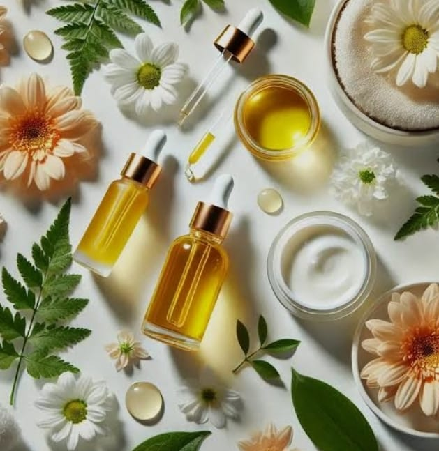

Looking for a simple skincare routine for a glowing skin? You are not alone. Here is a short guide showing natural, affordable and simple hacks you can start now.

Looking for a simple skincare routine for a glowing skin? You are not alone. Here is a short guide showing natural, affordable and simple hacks you can start now.
Hydration: Water they say is life. Drinking sufficient quantity of water- 2-3 litresfor adult, daily cleanses the body, keeps the skin plump and maintains elasticity.

Fruits and Vegetables: Load up on fruits like oranges, avocados, berries, omega-3 rich foods like fish and nuts. Avoiding diary, processed sugar and fatty foods if your skin is oily and prone to breakout.

Exfoliation: Gentle, regular removal of dead skin using honey and sugar one to two times a week to reveal glowing skin.

Sleep: The power of getting enough sleep cannot be underestimated as it helps prevent inflammation, dullness and eyebags.
Natural Oils and Butter: Oils and butters like coconut oil, olive oil, cocoa butter and shea butter moisturizes, heal and protect the skin. For best results, apply them when the skin is damp.

Because Your Skin Deserves Nothing Less Than Extraordinary. True beauty is ageless — and so is the desire for skin that glows, feels nourished, and turns heads at every age. Ude Beauty was created for those who refuse to compromise. Sophisticated formulas. Effortless results. A price point as thoughtful as the products themselves. The most luxurious thing you can wear is confidence in your own skin. Explore Ude Beauty — and indulge in what you truly deserve.